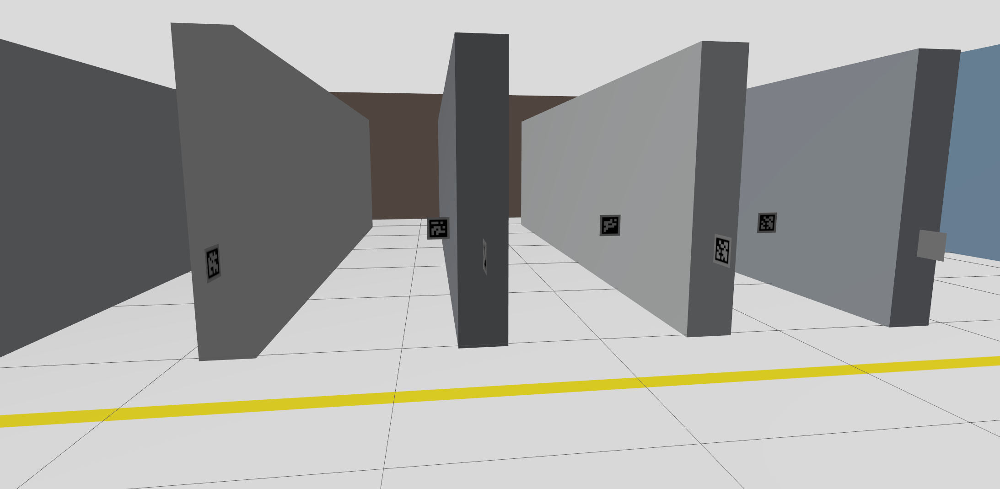
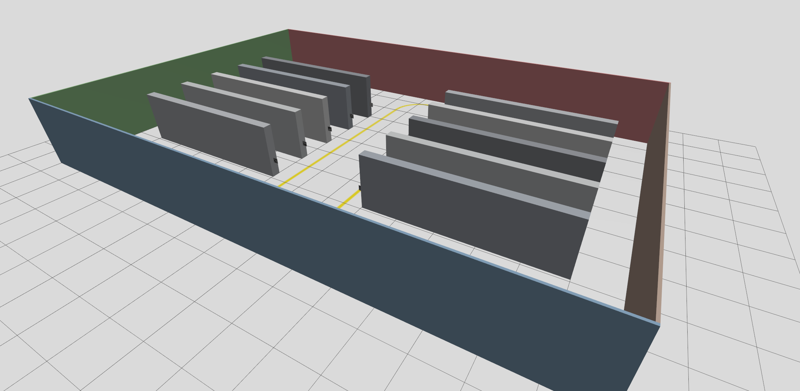

Fecha de entrega: a convenir con el docente
Formato de entrega: Archivo comprimido con el código fuente de los paquetes. Formato pdf en caso de necesitar entregar ejercicios de desarrollo. Proveer en un archivo de texto
README.mdlos comandos necesarios para la ejecución de el/los paquete/s para los ejercicios.Archivos disponibles:
entregable-2.zip- 2 carpetas (
AprilTag_36h11yWarehouse) con los modelos necesario para la simulación.
- 2 carpetas (
Descripción del escenario
La empresa Distribuidora Central S.A., dedicada a la gestión y almacenamiento de productos, enfrenta dificultades para controlar de manera eficiente sus robots de transporte interno. Con el objetivo de implementar esta tarea, lo contrata a usted para desarrollar un sistema autónomo de navegación.
La empresa pone a disposición un robot móvil diferencial de iguales características al desarrollador en el entregable 1. Además, el prototipo cuenta con una cámara Raspberry Pi Camera Module v2 y un sensor LIDAR SLAMTEC RPLIDAR C1, los cuales permiten la detección de obstáculos en el entorno y de marcas en el suelo.
Para las primeras etapas del proyecto, la empresa solicita una demostración simulada del sistema antes de su implementación real en el depósito. Con este fin, el escenario fue relevado y modelado digitalmente en un archivo SDF, representando la disposición y características del espacio físico de la empresa. El entorno de trabajo corresponde a una zona de almacenamiento, conformada por ocho pasillos de estanterías, organizados en dos bloques de cuatro pasillos enfrentados y separados por un corredor central. A lo largo de este corredor se encuentra un trazado de línea guía que servirá como referencia para el desplazamiento del robot. Algunos pasillos pueden incluir obstáculos (por ejemplo cajas).


El robot iniciará su recorrido desde la zona de partida ubicada en coordenadas x: -0.9 y: 0.5 (frame de referencia world) con orientación \(-\pi/2\) y deberá desplazarse siguiendo la línea marcada hasta completar una vuelta. En dicho recorrido, realizará un mapeo del espacio físico detectando los pasillos, obstáculos y demás elementos del escenario. Una vez se encuentre de nuevo en la ubicación de inicio, deberá esperar una orden de transporte con una ubicación dentro de la zona de almacenamiento. Una vez recibida la órden, deberá calcular la trayectoria necesaria para llegar al punto objetivo y ejecutarla en un tiempo acorde a las prestaciones del robot. En caso de no poder ejecutar la ruta, debe informar con un mensaje el motivo del fallo.
Funciones y comportamientos requeridos
- Seguimiento de línea: Utilizando la cámara y un algoritmo de seguimiento de linea, deberá desplazarse a lo largo del trazado central, manteniendo la trayectoria indicada con linea amarilla
- Mapeo del entorno: El robot deberá utilizar su sensor de rango láser para calcular un mapa de tipo Occupancy Grid y publicarlo en el topic
/mapde tiponav_msgs/OccupancyGrid - Recepción de órden de transporte: El robot deberá recibir una orden de transporte a traves del topic
/goal_posede tipogeometry_msgs/msg/PoseStamped, ejecutar el algoritmo de planeamiento de trayectoria para obtener la trayectoria al objetivo y publicarla en el topic/plande tiponav_msgs/Path. En caso de no encontrar una trayectoria válida deberá mostrar un mensaje correspondiente. - Ejecución de transporte: Luego de calculada una trayectoria válida, deberá ejecutarla utilizando los algoritmos de control implementados. En caso de no poder completar la ruta mostrar un mensaje correspondiente.
Anexo
Para utilizar el modelo provisto debe descomprimir ambas carpetas del archivo entregable-2.zip dentro de una carpeta models dentro del paquete a utilizar. Luego debe modificar el archivo setup.py de dicho paquete para poder instalar los modelos:
setup.py
from setuptools import find_packages, setup
import os
from glob import glob
NOMBRE_DEL_PAQUETE = # Completar con el nombre del paquete
setup(
name=NOMBRE_DEL_PAQUETE,
version='0.0.0',
packages=find_packages(exclude=['test']),
data_files=[
('share/ament_index/resource_index/packages',
['resource/' + NOMBRE_DEL_PAQUETE]),
# Install models inside the 'models/*' folder
*[(os.path.join('share', NOMBRE_DEL_PAQUETE, os.path.split(p)[0]), [p])
for p in glob(os.path.join('models', '**', '*.*'), recursive=True)]
],
# ...
)Para insertar el modelo dentro del mundo de Gazebo:
gazebo.launch.py
from launch import LaunchDescription
from launch.actions import
IncludeLaunchDescription, AppendEnvironmentVariable
from launch.substitutions import PathJoinSubstitution
from launch.launch_description_sources import
PythonLaunchDescriptionSource
from launch_ros.actions import Node
from launch_ros.substitutions import FindPackageShare
# ...
NOMBRE_DEL_PAQUETE = # Completar con el nombre del paquete
def generate_launch_description():
gz_model_path = AppendEnvironmentVariable(
'GZ_SIM_RESOURCE_PATH',
PathJoinSubstitution([
FindPackageShare(NOMBRE_DEL_PAQUETE), "models"
]),
)
# Launch Gazebo
gz_sim = IncludeLaunchDescription(
PythonLaunchDescriptionSource(
PathJoinSubstitution(
[FindPackageShare('ros_gz_sim'), 'launch', 'gz_sim.launch.py']
),
),
launch_arguments={
'gz_args': '-r empty.sdf',
}.items()
)
load_warehouse = Node(
package="ros_gz_sim",
executable="create",
arguments=[
"-entity", "warehouse",
"-file", "model://Warehouse",
],
output="screen",
)
return LaunchDescription([
gz_model_path,
gz_sim,
load_warehouse,
])